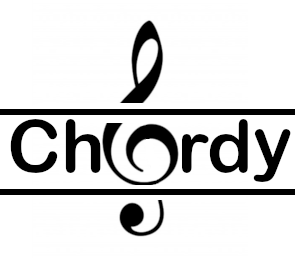

Chord Tool
GitHub
Other Projects

Chordy
A visual tool to help discover and learn piano chords.
Get Started
Chord Dictionary
Reverse Lookup
Key
Chord
C
C♯/B♭
D
D♯/E♭
E
F
F♯/G♭
G
G♯/A♭
A
A♯/B♭
B
Major
Minor
Diminished
Augmented
Seventh
Choose more notes please
Reset
—